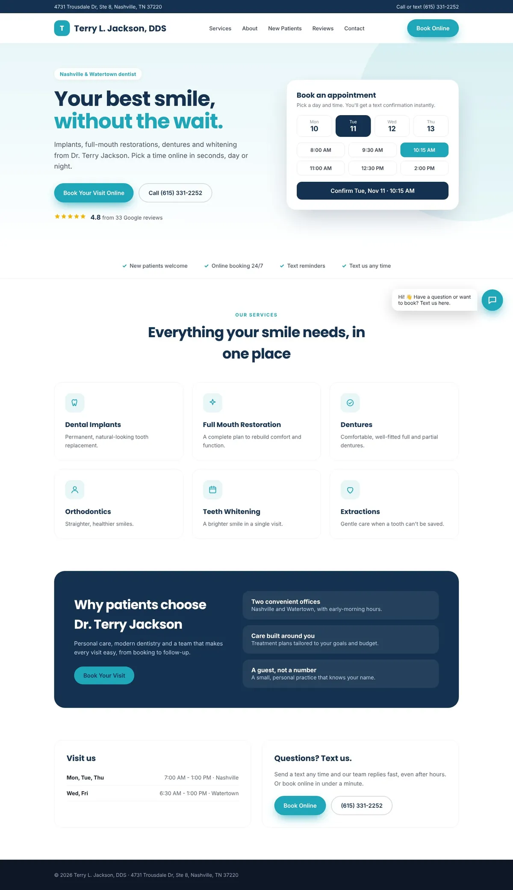
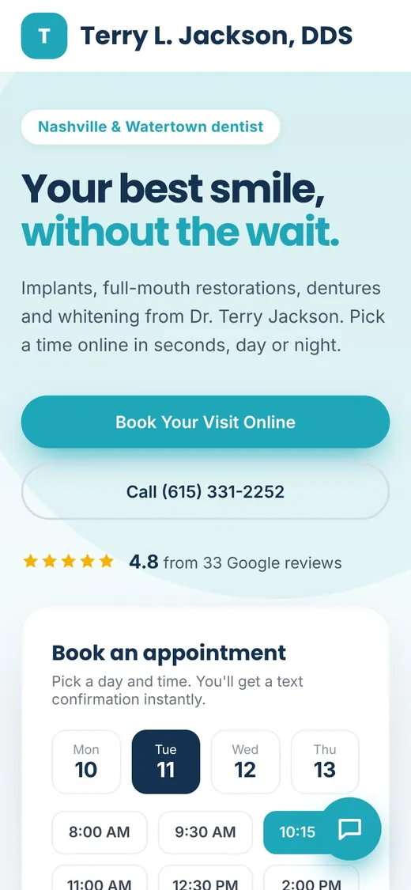

Prepared for Terry L. Jackson, DDS · November 2026
Free practice review
Terry L. Jackson, DDS: patients love you. Google just doesn't show it yet.
Your patients rate you 4.8 stars. But when someone in Nashville searches for a dentist, they compare review counts too, and the practices next to you have far more. Here's what we found, and what we'd do about it.
1 · Your Google reviews vs nearby practices
33 reviews vs 616 at the busiest practice near you
Your rating is as good as theirs. The difference is how many patients were asked to leave a review. That gap of 583 reviews is what a new patient sees first.
Terry L. Jackson, DDS4.8 ★
33
Dental Design Studios4.9 ★
616
Nashville Family Dentistry4.8 ★
472
Cornerstone Family Dentistry4.9 ★
442
Ratings and review counts from Google Maps, checked 3 November 2026.
2 · A new homepage for Terry L. Jackson, DDS
We put together a first version of your new homepage
Same practice, same services, same 4.8-star reputation, rebuilt to turn visitors into booked patients: online booking right on the first screen, a text-us button for after-hours questions, your Google rating front and centre, and a layout made for phones.

Desktop

Phone
This is a concept made from the public information on your current website. It isn't live anywhere, and nothing changes unless you want it to.
3 · What's costing you new patients today
Three things we noticed on your current website
Patients can't book online, so new patients have to call during your morning hours.
There's no way to text you or ask a question after hours, so evening visitors leave.
There's no contact form, and on a phone the number isn't tap-to-call.
4 · How we'd close the gap
More reviews, more bookings, on autopilot
Every patient is askedA friendly text goes out after each visit with a one-tap link to your Google page.
Feedback reaches you firstAny concern a patient raises comes straight to your team, so you can make it right quickly.
Booking and texting 24/7Online booking, a text-us button and instant replies, so evening visitors become booked patients.
Want us to walk you through it?
A free 15-minute call. We'll go through this review with you and tell you plainly what it would take, no pressure.